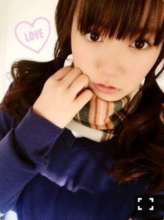

| 2015/04 30 Thu | ひめたん-OoO-その539 |
ついーんてーるのばっかーりぼーんー！
ひめたんでーす！

ラフレクランさん風ご挨拶。
前回のらじらー！で
募集したやつ（＾ω＾）
今日はゆっくりできたので
録画してたアニメみたよ！
「俺ガイル。」
「俺物語‼︎」
「終わりのセラフ」
「境界のRINNE」
「食戟のソーマ」
今季はこんな感じ
他にも何個かみてます～
アニメ好きなひと
今度の握手会とかで
アニメトークしよーー♡

さて、今週土日は
パシフィコ横浜で握手会！
土曜は全握、日曜は個握と
GWも乃木充......♪
遊びにきてくれるみなさんよろしくね！
楽しみにしてます(´,,•ω•,,｀)
土曜日の全握は
第18レーン 生駒×優里×中元
3人レーンきたーー！
テーマパークみたいなレーンだね！
生駒ふぁむのみなさん
ふぁみたんのみなさん
ひめとも仲良くしてください( ˇωˇ )
きゅんきゅん王国のみんな
もちろん待ってるからねーー！！
寄り道しちゃだめだぞー！
この3人といえば
アニメトークしよーー♡(2回目)
この3人ともアニメ好きなんだけど
好きなジャンルが違うんだよねぇ
生駒ちゃんとゆったんは
今季なに見てるんだろ？
あ、それだけじゃなくて
いろんなお話しようね！
びーむもやっちゃうよ～
個握は半月ぶり？
お寝坊は許さないんだからねー
お洋服はもう買ってあるんだけど
ひめがひとりで選んだんだー
メンバーも褒めてくれたんだ(＊'ω`＊)
楽しみーー♡

そして
日曜の夜は、らじらー！サンデー
みんな握手会のあとは早く帰るか
帰り道にスマホか
忙しくても聞いてね♡♡
握手会お留守番ちーむは
何が何でも聞いてね♡
ゲストは声優アーツに井口裕香さん
10時台には乃木坂より秋元真夏ちゃん
◎番組へのお便り
◎リクエストソング
◎かわいく言いやがれっ！！
◎無機物48
◎らじらー式恋愛参考書
Twitterでつぶやく時のハッシュタグは
#nhkらじらー
お待ちしてます( ˇωˇ )
最後に、30日発売のブブカで
真夏さんと必殺技対決してます！
ついに決着ついちゃうかな？♡
チェックしてくれなきゃ
ひめたんびーむ（<・ω・>）
なーんちゃって

 スキンケアなにしてる？
スキンケアなにしてる？
保湿とか基本的なことを大事にしてるよ
化粧水変えたらメイクさんに
最近お肌いいね～て褒められたのが
嬉しかったな(´｡･v･｡｀)
そういえば、もうすぐでGWだね！
最近行きたいと思ってるトコとか
あるのかな？
乃木坂に入ってなかったら
日焼けとか気にしないでいいから
海とか行きたかったね～
時間あったら広島帰りたいなあ
いつか隠れている触角が
復活する事はあるんでしょうか？
制服以外の時は
触角にこだわりはないのよ！
握手会の時は気分で
ツインの触角あったりなかったり。
そいえば、俺も俺がいる見てる！
ひめたん一期も見てた？
みてたよーー！もちろん！
私は結衣ちゃん（＾ω＾）やっはろー
ひめたんの日記の
コメント欄下２ケタに46を踏んだ方へ 手書きでコメ返するコーナー
＼ ひめたん46 ／

きらきらにしてみた、気分で。
しゅわっち！しゅわっち！
1泊2日、東京から離れたところで
収録してきました！
どえらい筋肉痛なの⊂( ˆoˆ )⊃
楽しかった！空気がきれいだった！
メール送れなくて
心配かけちゃってごめんね( ´•̥ω•̥` )
許してくれる？( ´•̥ω•̥` )
(＊´・ω・＊)
コメント(1048)
2015/04/30 23:36